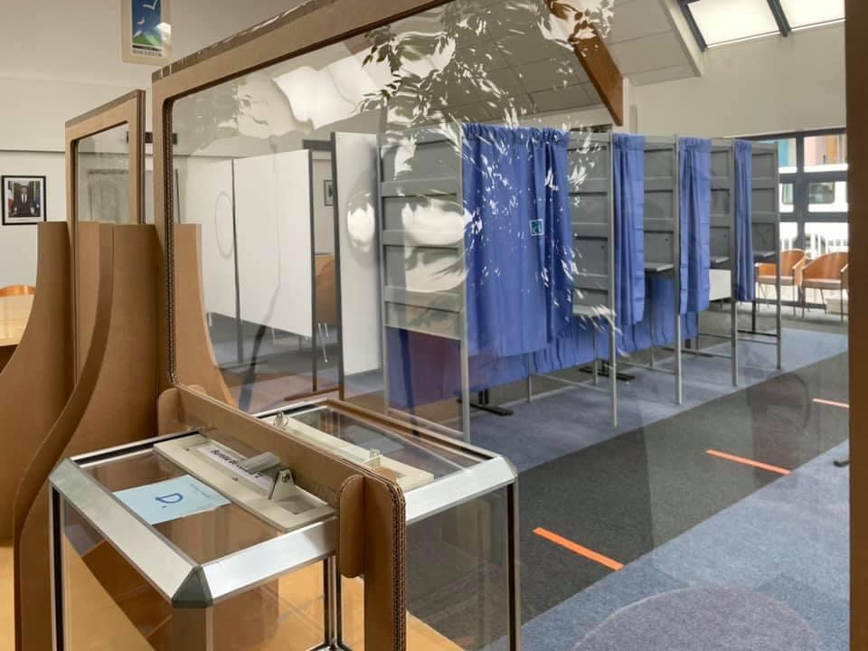

- Cet événement est terminé
Inscription sur les listes électorales en vue des Législatives
4 février 2022 à 8 h 00 min - 4 mars 2022 à 17 h 00 min
Navigation de l'événement

Les dimanches 12 et 19 juin auront lieu les Législatives.
Si vous n’êtes pas encore inscrits sur les listes électorales, vous avez jusqu’au 6e vendredi avant le scrutin, le 4 mars pour vous inscrire en mairie, 28 rue de la République, sur présentation de votre pièce d’identité et d’un justificatif de domicile de moins de 3 mois.
Il vous est possible d’effectuer cette démarche via service-public.fr jusqu’au 2 mars.
Adresses des bureaux de vote à Hoenheim :
01 Hall d’accueil de la Mairie, entrée principale
02 École maternelle du Centre, 3 rue de l’École
03 École élémentaire du Centre, 18 rue des Vosges
04 Antenne mairie Ouest, rue Anatole France (arrière Lidl)
05/06, 07/08 École élémentaire Bouchesèche, bât. 1, 5 rue du Wangenbourg (sous le préau)
09 Multi accueil Les Champs fleuris, 97 rue de la Loire